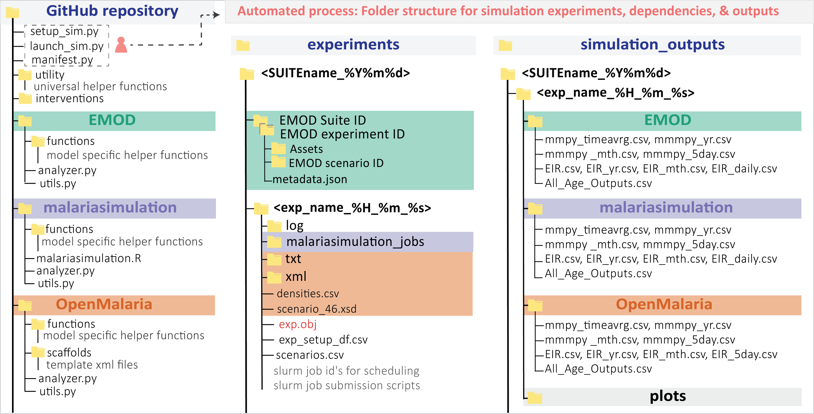

Overview of MultiMalModPy
MultiMalModPy includes model-agnostic (global) and model-specific Python scripts.
The global scripts define parameters and manage the simulation, while the model-specific scripts handle sub-processes
such as input generation, output processing, and model features.
All parameters from the global scripts are written into a serializable exp object used by each model during
pre- and post-processing.

1. Setup and launch requires user input of the parameters for the simulation to run (setup_sim.py).
Simulations are submitted via launch_sim .py and all defining parameters are stored in a seralized python object (exp.obj),
used throughout the proce ss.
Shell job submission scripts are created to automatically run subsequent scripts.
2. Simulations run automatically after model-specific utiliy functions created scenarios for each model. Simulations run independently per model and generate raw outputs. Simulation running time varies from model to model.
3. Postprocessing is initiated once simulations finish. The model-specific raw outputs and outcome measures are aggregated over time and by age and formatted.
4. Visualization of outputs starts automatically after the analyzer. The standardized CSV files per model are used to generatea set of pre-defined figures. Figures included are: relationship between outcomes, time-series and agecurves. The figures can be modified and extended by the user.
Repository structure
Back-end:
Subdirectories for each model contain model-specific functions to handle the input and output processing for each
model.
To add new functionolaity or custom simulation setups, the functions and interventions.py under each model
directory as well as the experiments.py will need to be edited.
Front-end:
User-facing script are directly under the root directory, and include three scripts:
manifest.py, setup_sim.py, and launch_sim.py.
📦MultiMalModPy
┣ 📂EMOD
┃ ┗ 📂functions
┃ ┗ 📜calib_params.py
┃ ┗ 📜interventions.py
┃ ┗ 📜EMOD_functions.py
┃ ┗ 📜forced_EIR.py
┃ ┗ 📜reporters.py
┃ ┗ 📂inputs
┃ ┗ 📂weather
┃ ┗ 📜perennial_rainfall_daily.bin.json
┃ ┗ 📜...
┃ ┗ 📜analyze_sim.py
┃ ┗ 📜utils.py
┣ 📂malariasimulation
┃ ┗ 📂functions
┃ ┗📜get_seasonality_parameters.R
┃ ┗📜interventions.R
┃ ┗📜run_simulations.R
┃ ┗ 📜malariasimulation.R
┃ ┗ 📜analyze_sim.py
┃ ┗ 📜utils.py
┣ 📂OpenMalaria
┃ ┗ 📂functions
┃ ┗ 📜interventions.py
┃ ┗ 📂scaffolds
┃ ┗ 📜R0000GA.xml
┃ ┗ 📂snippets
┃ ┗ 📜demographics.xml
┃ ┗ 📜analyze_sim.py
┃ ┗ 📜utils.py
┣ 📜manifest.py
┣ 📜setup_sim.py
┗ 📜launch_sim.py
Inputs, simulation and output directories
